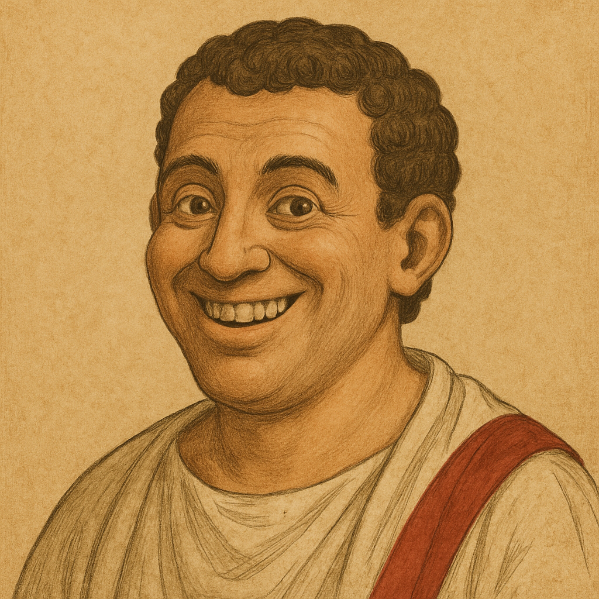

| Skills | ||
|---|---|---|
| Science | ||
| Census & Logistics Analysis | Interpreting demographic |
★★★★★
|
| Scroll & Tablet Organization | Hierarchical indexing systems |
★★★★⯪
|
| Astronomy | Heliocentrism, planetary motion |
★★★⯪☆
|
| Anatomy | Dissection, human biology exploration |
★★☆☆☆
|
| Art | ||
| Painting | Oil, fresco |
★★★★★
|
| Sculpture | Marble, bronze, religious and anatomical forms |
★★★★⯪
|
| Perspective | Linear perspective and vanishing points |
★★★★★
|
| Architecture | Renaissance domes, columns, symmetry |
★★★★☆
|
| Philosophy | ||
| Ethics | Humanism, moral philosophy |
★★★★⯪
|
| Logic | Aristotelian logic, deductive reasoning |
★★★★☆
|
| Metaphysics | Nature of being and reality |
★★★⯪☆
|
Marcus Tabulae Pivotus

Roman Analyst and Philosopher
🏠 Rome, Roman Empire
☎️ +I IV XII VIII II
📧 marcustabulaepivotus@romanmail.com
LinkedIn
GitHub
🌐 marcustabulaepivotus.com
About Me
Roman philosopher whose passion lies in the elegant dance of data and the divine art of the pivot table. I bring order, clarity, and a touch of sardonic wit to the chaotic world of information. If you seek a mind that can both contemplate the cosmos and meticulously sort your chariot race results, look no further. I am the emperor of efficiency and the oracle of organization.
| Languages | ||
|---|---|---|
| 🇮🇹 Latin | Native |
★★★★★
|
| 🇬🇷 Greek | Intermediate |
★★★⯪☆
|
| 🏛️ Dacian | Basic |
★★☆☆☆
|
💡 Projects and Publications
The Categorization of Coliseums: A Comprehensive Database of Gladiatorial Engagements | 30 BCE - Present | Lead Scriptor & Data Augur
Developed and maintained a comprehensive scroll-based database of gladiatorial contests across the Roman Empire, meticulously detailing combatants, outcomes, beast encounters, and crowd sentiment (as interpreted from audible cheers and jeers). Pioneered a system of “scroll-slicing” and “wax-tablet pivoting” to generate daily, weekly, and annual summaries of arena performance, identifying emerging trends in combat styles and popular beast pairings.
45 BCE - 25 BCE | Decoding the Oracles of Delphi: Prophetic Quantitative Analysis
Abacus-Based Regressions, Pattern Seeking, Metaphysical Statistics. Transcribed and analyzed over 1,000 Delphic pronouncements, classifying them by theme and predictive accuracy.
🛠️ Experience
20 CE - Present | Senior Data Archivist | Imperial Scriptorium, Rome
Spearheaded the standardization of historical records, converting diverse scroll formats into coherent, searchable datasets. Implemented papyrus-based indexing systems to streamline access to imperial decrees and census figures. Optimized the flow of critical information from distant provinces to the capital, ensuring timely strategic decisions.
5 BCE - 15 CE | Aquaeductus Efficiency Expert | Roman Public Works Department
Analyzed water flow dynamics across major aqueduct systems, identifying bottlenecks and optimizing resource distribution. Developed stone tablet schematics for improved maintenance schedules, reducing repair times by 30%. Consulted on new construction projects, ensuring optimal hydrological planning for urban water supply.
🎓 Education
15 CE | Certified Imperial Data Harmonizer (CIDH) | Roman Guild of Scribes and Numerologists
License number LXXVII.
25 BCE | Lyceum of Athens (via Correspondence Scrolls) | Doctorate in Metaphysical Data Structures
Rigorously debated the philosophical implications of logical fallacies and their impact on data integrity. Thesis: “The Optimal Categorization of the Cosmos: A Hierarchical Approach to Universal Understanding.”
35 BCE | Imperial School of Rhetoric & Numerology, Rome | Master of Abacus Arts & Persuasive Logic
Mastered the art of rapid calculation and complex numerical analysis using the abacus and counting boards. Specialized in constructing logically impeccable arguments for the efficient organization of public records and imperial decrees.
40 BCE | Private Tutelage under Senator Quintus Discipulus | Foundation in Stoic Data Management
Grounded in the stoic principles of order, self-discipline, and the systematic reduction of chaotic information. Developed foundational skills in papyrus inscription, scroll indexing, and the early application of data organization to private finances.